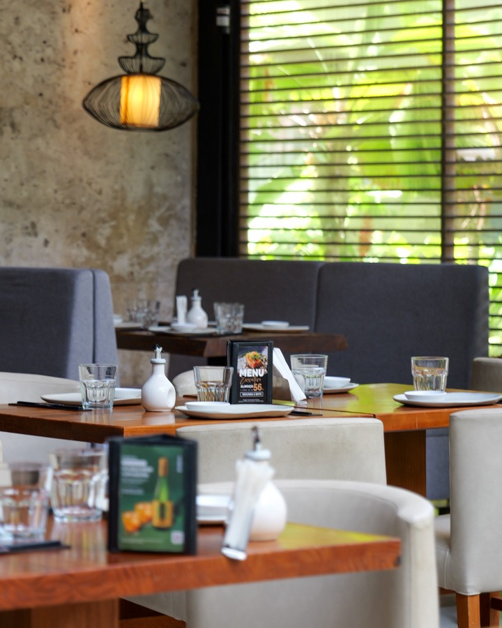
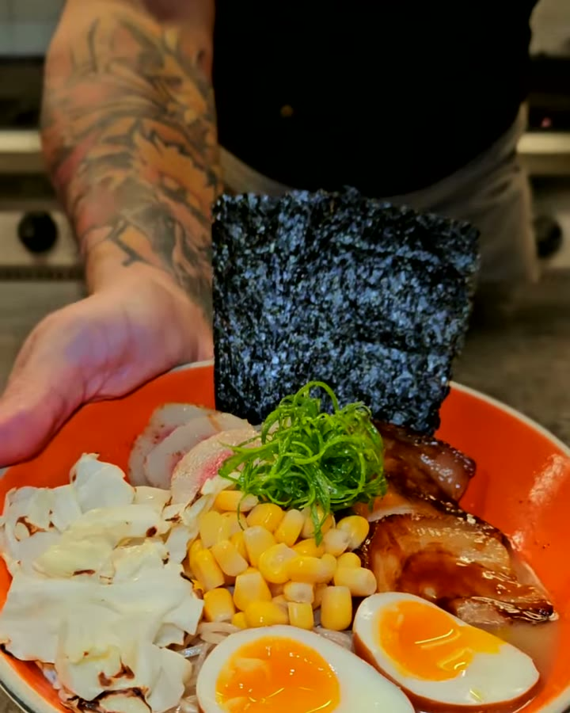

Da cozinha
Ver tudo
RyoriFale com a casa
Eventos, grupos, aniversários ou uma dúvida sobre o cardápio. A equipe responde no WhatsApp.
Ryori, do Grupo Social Clube


RyoriEventos, grupos, aniversários ou uma dúvida sobre o cardápio. A equipe responde no WhatsApp.
Ryori, do Grupo Social Clube